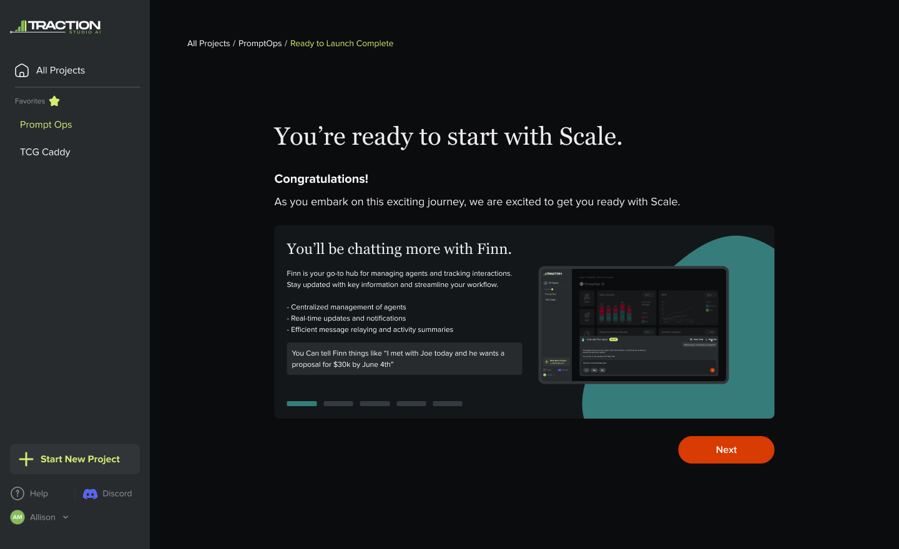
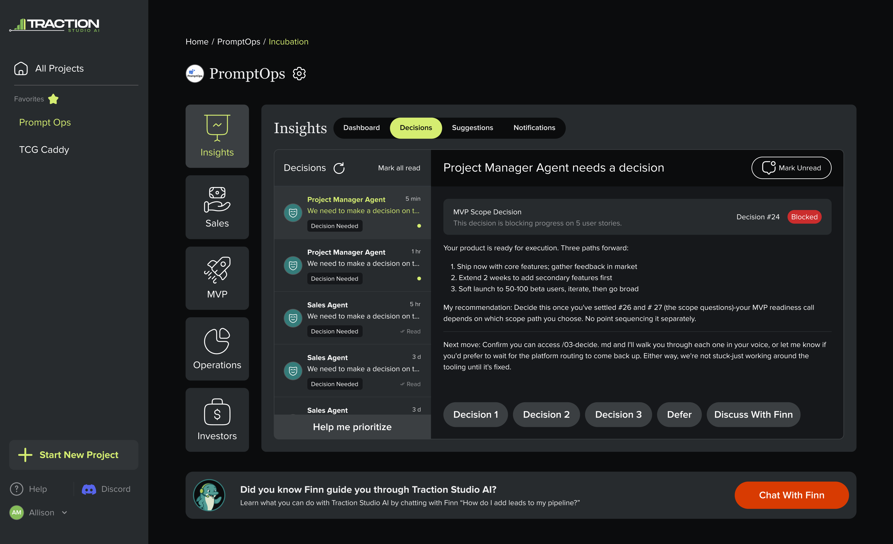
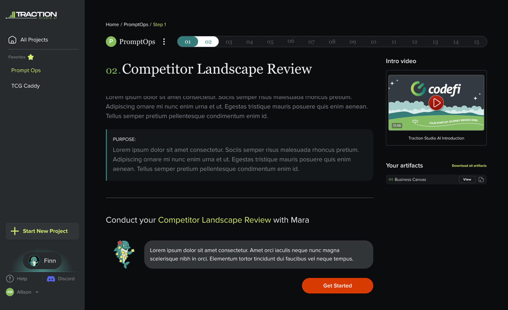
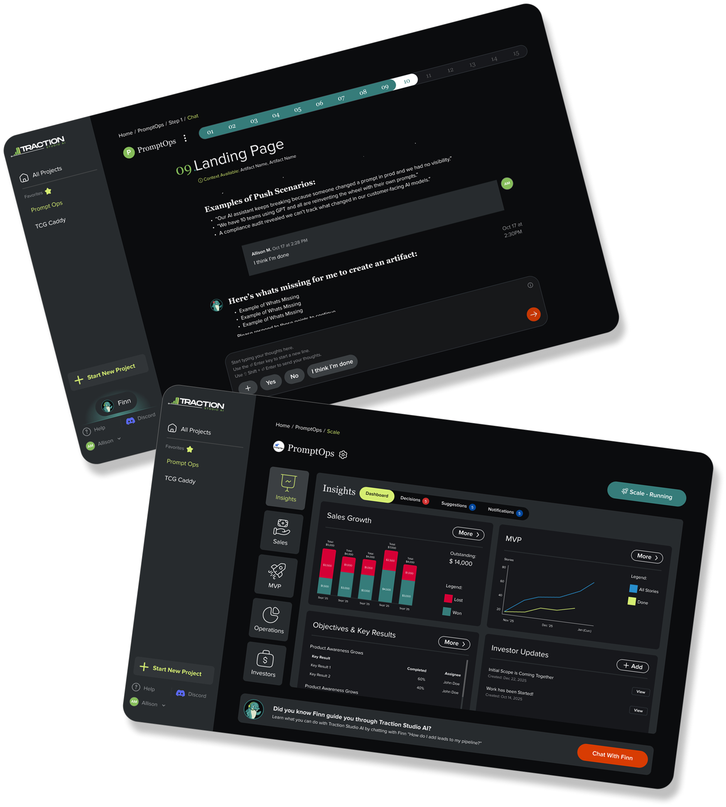
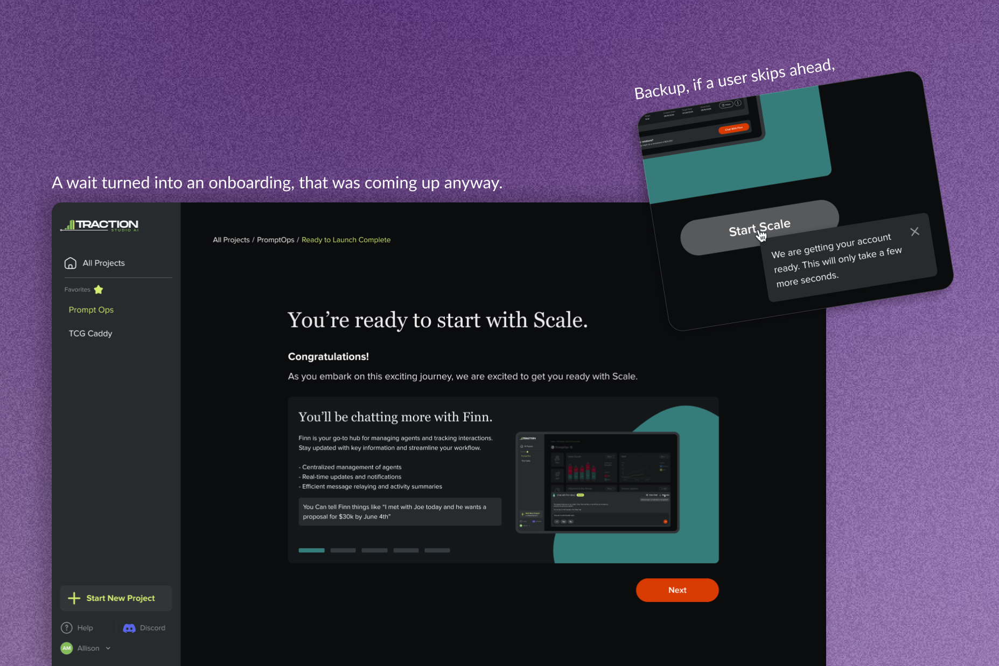
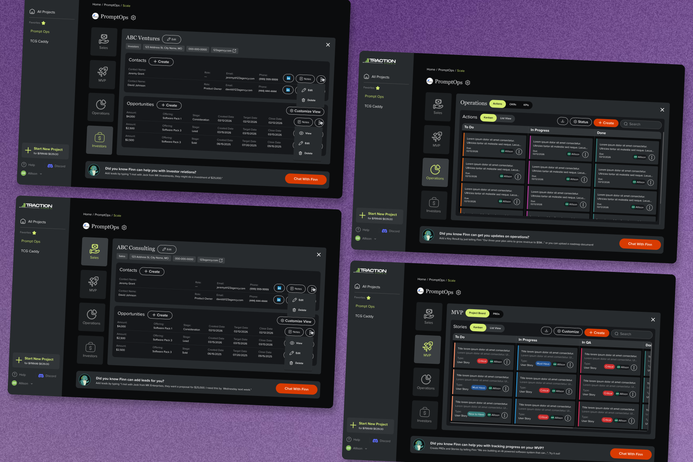
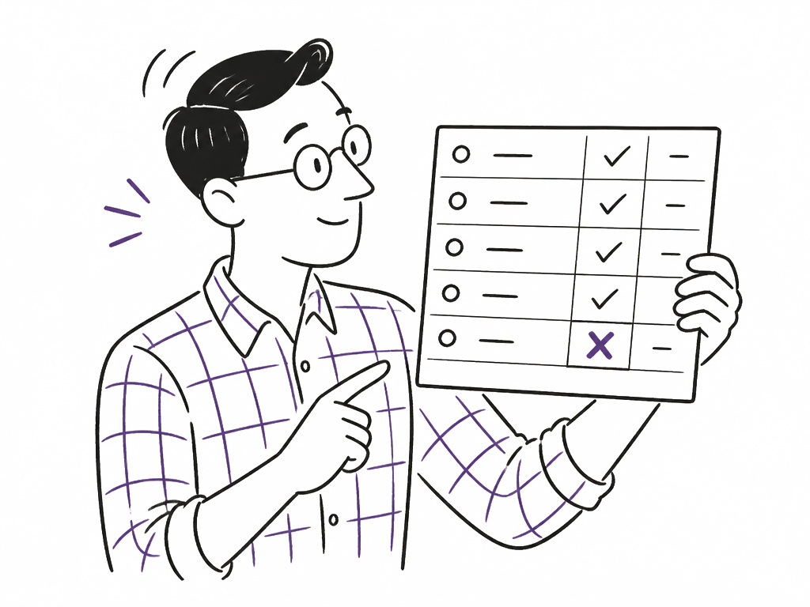
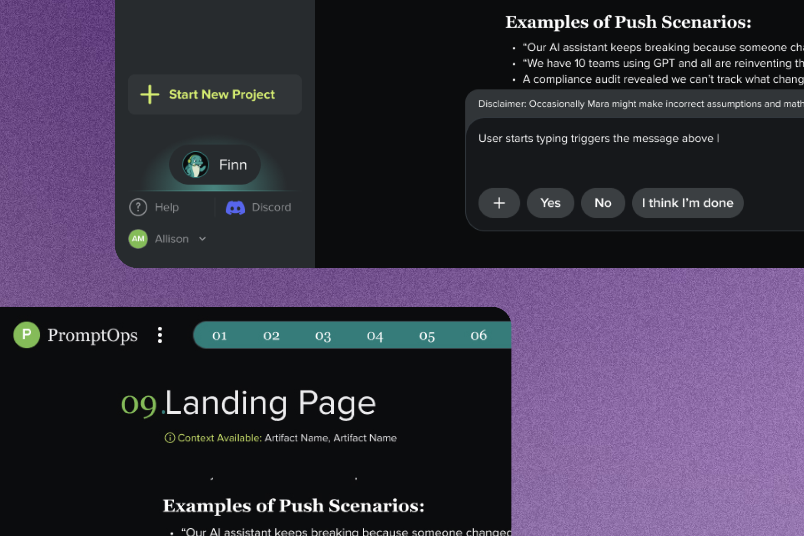
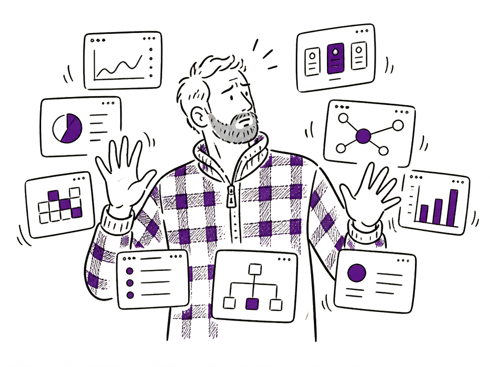
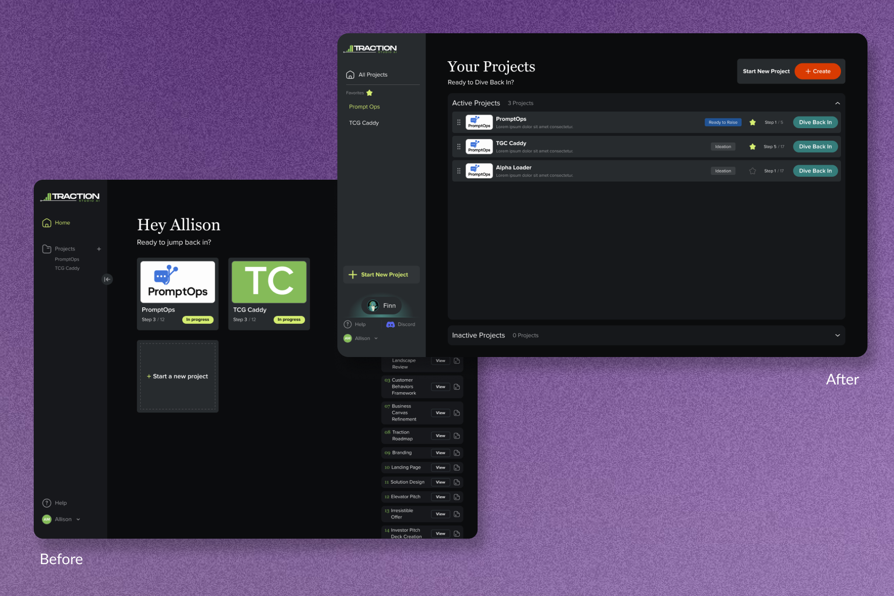

Designing the handoff from a conversational AI into a structured product



I own the handoff between a conversational AI and the structured product it becomes. I own it alone.
Scope: 0→1, solo. The entire paid surface.
Pattern: reframed a required wait as onboarding, four separate modules as one shared system, and now I'm designing for a model that can be confidently wrong.
Verification: the onboarding sequence shipped. Scale and the AI patterns are still in progress, with no outcome data yet.
As the only designer on Traction Studio AI, Codefi's AI-native founder platform, I designed how a conversational assistant hands its work off to a structured SaaS surface, then built that surface's entire paid experience from scratch alongside our PO.
Three chat-based modules feed one SaaS product
Traction Studio AI starts founders in Build, where Ideation and Ready to Raise both run as chat. From there they cross into Scale, a full SaaS surface with a CRM, sales funnel, build board, investor relations, and now agents. Ready to Launch sits on the far side of that crossing, a third chat surface where founders work through go to market planning.
Every artifact a founder produces in chat has to become structured state in the SaaS. Most AI products are either fully conversational or fully structured, not both. This one had to be.

Turning a required wait into onboarding
A founder finishes Build and crosses into Scale for the first time. Standing that environment up, and migrating everything they made in chat into structured state, takes engineering 5 to 60 seconds. The initial request was a loading screen.
The core decision
The request was a loading screen. Before building it, I asked what the wait was actually for, why the range was that wide, and what would be different on the other side of it. Two things came out of that. Founders arrive at Scale having never seen it, so onboarding was going to be the next thing asked of me anyway. And they are already stopped, already expecting the product to appear. Putting the orientation in the window collapsed two pieces of work into one, and meant neither had to be built twice.
So the spinner became a 5-slide onboarding sequence. That is the exact window engineering needed, spent on the thing the founder needed next.
- Reframes a stated requirement ("loading screen") into a value-additive moment ("onboarding")
- Solves two unmet needs at once: the engineering latency buffer, and first-time orientation to a surface the user has never seen
- Five slides maps to five tabs: the sequence runs one tab per slide, in the order a founder meets them
- Creates a reusable pattern for any future moment where the product does heavy backend work

The continue button stays disabled if a founder gets through the slides first, because there is nowhere to send them yet. The tooltip is for the people who skip onboarding, hit a dead button, and would assume it was broken. It says the environment is still being set up and nothing about why, because the why is our problem.
Four modules, designed as one system
Once a founder crosses the handoff, Scale is where they actually run the company.
The problem: four features that happen to share a login
Sales, ops, investor relations and MVP tracking were being specced as separate modules, with agent features layering in as the product's agentic direction firmed up. Scoped independently, each would have arrived with its own table pattern, its own empty state, its own idea of what a destructive action looks like.
The founder pays for that in relearning cost every time they switch context, which is constantly.
The decision: one shared system across all four
Working closely with our PO, pressure-testing the PRD, surfacing flow problems and iterating collaboratively to final designs, I designed the entire paid surface from scratch as one system: a shared component library across all four modules, down to full light/dark theming, so a pattern learned in one place holds in the next.
The research I pushed for, and why losing that argument was right
I wanted to do more research before designing. The team was in ship-1.0-and-iterate mode, and I lost that one. They were right, and working out why changed how I choose a method.
Research has a shelf life, and the length of it depends on how fast the ground moves. Construction estimating hasn't changed in decades, so what I learned there held for three years. This is the opposite case. Since I joined, general AI chat tools got good enough that "a structured system beats a chat window" stopped being our differentiator, and the product has moved because of it. Research done in month one would have described a market that no longer existed by month six.
So the method follows the domain. Stable context: research, design, iterate, launch. Context moving underneath you: build, ship, watch what breaks, iterate. Choosing the wrong one of those costs about the same either way, and I had been treating the first as the professional default, when it is one of two options.

Guided compliance form
The form had been written for founders of any kind, so software founders were being asked whether they had physical store locations, and to pick a category from a list they had never seen. Both are support tickets waiting to happen. I argued for contextual examples and pre-filling what we already knew.
In progressMaking the assistant findable
It sat tucked in a corner where it read as a help widget, so founders were not finding the most useful thing in the product. Moved it and gave it a soft glow, so founders find it on their own.
ShippedPricing: three ways to cover a cost, and why one line won
Scale runs a live environment per founder, costing real money from the moment it starts. We wanted it running the second someone entered, because agents producing something on arrival is the value. So the cost lands before anyone knows whether that user pays.
The model before this was a flat fee per project, with one step free so a founder could judge the output before paying. It assumed someone committed enough to a single idea to put several hundred dollars behind it largely sight unseen. Early-stage founders are shopping between several ideas at once, and that assumption broke first.
Three options were on the table for what replaced it. Absorb it, and run instances for people who had not paid. Raise the price of Build to subsidise it, then charge again for actually using Scale. Or one price at one gate. I argued for the last, and my reason was as much marketing as product: I was going to be the person selling this, and a page that advertises one number then asks for a second the moment you finish a step converts worse and explains worse. A pricing model has to be sayable in one sentence.
There are no reworked-it-twice stories on this page, and that is not because nobody pushes back. I work with our PO as a co-owner of the spec: approaches, trade-offs and the reasons for and against get talked through before I open a file.
Disagreement surfaces as a conversation about the spec, before anyone has drawn anything. Rework still happens, when user sessions say it should, and then we run the same conversation again with better information. What has not happened here is rework caused by never having had the conversation, which is the clearest difference between this job and the last one.
Those decisions assume the product gives the founder a right answer. A model-driven one can't.
Designing for a model that can be wrong
A conversational product makes a promise a deterministic one doesn't have to: that the thing on screen might be confidently incorrect. That is an interface problem before it is a model problem.
Three patterns, applied across the product
These are defaults I apply wherever the model touches the interface, and they're the part of this job with the least existing convention to borrow from.
The same question came up larger when the product's agentic direction was being set. I argued it should automate what a founder can already do by hand, and stop short of running the company for them. The test is whether someone can still answer for a decision the product made for them. That position held, and it is the line I would defend hardest on any AI product.
Confidence scores were the obvious pattern and we turned them down, on positioning grounds. Traction Studio should read as a programme a founder is working through, and a percentage beside the output breaks that frame in one glance. Once it reads as general-purpose AI, it competes with general-purpose AI.
- Contextual awareness indicators: showing the user what the assistant currently knows about them and their company, so a wrong answer traces back to a specific, checkable input
- Structured input scaffolds: the blank box gets replaced with something shaped to answer into. The product is a sequence, and an answer that wanders off its step produces output built on the wrong inputs
- Transparency messaging for hallucination mitigation: saying plainly, at the moment output is generated, where it came from and that it should be checked before anyone acts on it


Beyond the prototype
Every module started as a light, functional prototype. Turning that into a shippable product was its own body of work, spread thin across the whole surface.
The rest of the surface
The rest of a 0→1 product is ordinary by comparison, and it is most of the surface. Navigation was the biggest of it: targets too small to hit reliably, hover states that behaved differently depending on where you were, and a layout that did not survive a phone. The fix was one consistent idea applied everywhere, so finding a tool stopped depending on having found it once already.
Then layouts from placeholder to real content, and patterns applied across the surface that had only ever existed on one screen. None of it reduces to a decision worth its own chapter, which is why it is here: it is the volume of work between a working prototype and something you can hand a founder.

